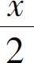
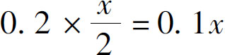
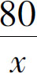
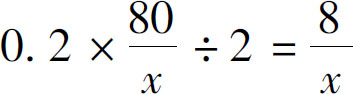
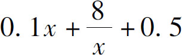

下面我们继续讨论生活中的数学．手机桌面上的图标该不该分类呢？
首先要讨论的是，这是个数学问题吗？有人说，这不是数学，我手机上的图标怎么摆我自己说了算，这只是我的个人习惯问题，根本就不是数学问题．这话听起来很有道理．但我要问你了，世界上有没有人愿意手机屏幕只放一个图标呢？恐怕没有吧！那既然是习惯问题，为什么没有人这么做呢？很简单，因为他不想自找麻烦．其实，无论你的习惯是什么，我们的目标都是一样的，都希望让手机用着最简单、最方便．我们继续往下分析，对于手机图标的摆放问题而言，什么叫最方便呢？首先我们得明白，我们为什么要把图标摆在桌面上呢？答案很简单，为了快速找到App（手机软件）、快速打开App．这里面的核心价值点就是“快速”，数学问题就从这两个字里冒出来了，这速度不就是个时间问题吗，这“快”不就是在求时间的最小值吗？看到没有，经过分析，一个看起来不是数学问题的习惯问题，它就变成了定量的数学问题了．那么我们接下来又该做什么呢？发现常量！
但是发现常量的过程可就复杂了：你在手机上打开一个App的过程中，好像并没什么常量存在．我们每个人手机上的App数量都不一样多，每个人打开一个App的速度也不一样，如果所有数字都不相同，那我们怎么比较哪种方法更快呢？很简单，因为我们现在分析的不是某一个人的问题，而是所有人共同面对的问题，所以我们要把所有的数值平均一下，取一个发现App和打开App的平均速度，然后再计算．这样的平均速度怎么确定呢？每个人手机上App不一样多，打开的速度也不一样快．其实这也不难，我们可以尝试一下，在一个满屏都是App的图标界面上，从头看到尾，算算把每个App都看清楚需要多少时间，然后就知道看清一个App的时间了．那么，如何计算在一个屏幕上找到任何一个App的平均时间呢？可以认为它就等于屏幕图标数量的一半儿乘以看清一个App需要花费的时间，为什么是一半呢？因为这个App不一定出现在什么地方啊，出现在上面、下面、左边、右边任何一个地方的可能性都有，把这个位置一平均，就相当于从开头找到中间．根据常识，手机上平均图标数量是80个左右，而我们看清一个图标需要的时间大概是0.2秒，手指打开一个App或者滑屏的时间是0.5秒，手机屏幕的图标数量是5行4列，也就是20个，就这样，所有的常数我们就都得到了．
知道了这些常数，我们就先看一下在没有分类的情况下，平均找到一个App所用的时间，因为手机上有80个App，每个屏幕上有20个，所以平均有4个屏幕．根据前面讨论的内容，我们可以假设出现在中间的那个App的打开时间就是平均时间．全屏一共有80个，中间的一个就是第40个，看清这40个图标要用的时间为0.2×40＝8（秒），因为它在第二个屏幕，所以我们还要翻一下屏幕才能看到它，所以还要加上一个翻屏的时间0.5秒，一共是8＋0.5＝8.5（秒）．
弄清了这个数字，我们再来讨论有分类的情况．这里我们要使用变量了．假设我们把手机桌面上的图标分成了x 个分类，那么，再根据这些常量计算出来平均找到一个App用多少时间就可以了．如果我们把手机App全部放到了分类里，那么一开始，只需要一个屏幕就可以把这些分类装下了．我们要打开一个App，首先要从x 个分类中找到指定的分类，这个平均时间就等于找到中间那个分类的时间，找到一个图标的时间是0.2秒，中间那个分类的序号是

，所以我们需要的时间是
．然后我们还需要动手指头打开这个分类，继续在这个分类下寻找，打开分类的时间是0.5秒，那么现在的总时间是0.1x ＋0.5，这个分类下平均有多少个图标呢？因为总数量是80个，所以平均有
个，我们找到这个图标所用的平均时间是多少呢？还是用找到一个图标的时间0.2乘以一半的图标数量，结果是
，最后，把这三部分的时间加起来，我们就得到了最终的代数式：
．接下来，我们尝试把几个分类数字代入试试看，如果我们把图标分成8个分类，所用到的总时间就是0.1×8＋8÷8＋0.5＝2.3（秒），如果我们分成10个分类，那就是0.1×10＋8÷10＋0.5，结果同样是2.3秒．如果是9个分类呢？计算结果就是2.29秒，经过试算，无论是8个、9个还是10个分类，结果都是两秒多，这样的结果要比没有分类的8.5秒要快得多，其中9个图标的分类是最快的．不过，要注意的是，这个结果是在一系列假设的条件下才成立的，如果你的反应速度不同、图标总数量不同，结果就不一定是9个分类最合适了．但无论如何，在图标数量比较大的情况下，手机图标有分类要比没有分类时方便很多．
通过分析手机图标分类的问题我们发现，手机桌面的问题从表面上看好像只是个人习惯问题，然而它的背后也同样隐藏着数学规律，只要我们经过耐心细致的分析，就不难发现其中的奥秘．我们之所以要不厌其烦地探讨这个问题，就是为了让你清楚地认识到，数学是无处不在的．学习数学的目的，是要让我们用更加理性客观的态度去看待这个世界．当我们看清这个世界的数学规律以后，就可以通过调整一些我们所能控制的因素，使得预期的结果达到最好，从而实现改变世界的目的．在后文中，我们还会涉及大量在生活和工作中的实际问题．
我们在前文中说过了，解决世界上一切问题的三个整体的步骤就是发现问题、分析问题、解决问题．我们把这三个步骤拿到代数学里来说就是列算式、化简算式、求出得数．那么算式应该如何化简呢？那就要看我们如何处理代数算式的加减乘除了，那么在加减乘除中又隐藏着哪些规律呢？